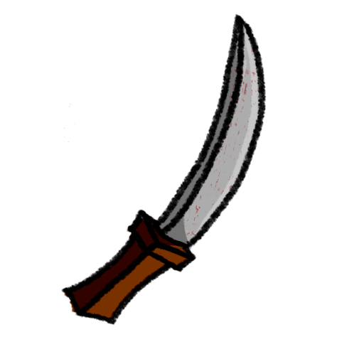

Portfólio
[2D assets] 2D weapons and resources icon
- 
[EN] Design of icons for weapons from a gamejam project based on handcrafted weapons. [PT] Desenho de icones para armas de um projeto de gamejam baseado em armas artesanais.
Artstation[3D Assets] Alternative technology - Low poly craft weapons collections
.png)
.png)
Low poly 3D assets made for a Gamejam with the theme "Alternative Technology"
Artstation[Game] Action Platformer - Portfolio prototype
.png)
.png)
.png)
.png)
.png)
.png)
[ENGLISH] This project does not have a financial or entertainment purpose. Instead, it aims to showcase the skills acquired during studies on hybrid games (2D and 3D) as a portfolio. During the creation of this project, I had the opportunity to learn and put into practice various functionalities. Some of them are listed below: Behavior tree and Blackboard Use of the PaperZD plugin 2D and 3D asset manipulation Creation and use of - Notify States AI Tasks AI Controller State Machines for 2D animations and more. I thank everyone again for their support during the project's construction and for accessing this project. [PORTUGUESE] Esse projeto não possui fim financeiro ou mesmo de entretenimento, e sim mostrar como portfólio capacidades adquiridas durante estudos sobre jogos híbridos (2D e 3D). Durante a criação desse projeto tive a capacidade de aprender e colocar em prática diversas funcionalidades, abaixo cito algumas delas: Behaviour tree e Blackboard Utilização do plugin PaperZD Manipulação de assets 2D e 3D Criação e uso de Notify States AI Tasks AI Controller States Machines para animações 2D e mais. Agradeço a todos novamente tanto pelo apoio durante construção do projeto, quanto no acesso a esse projeto. Gustavo Feliciano
Baixe aquiSanta Claus and the purple crystal

Obrigado por jogar! Por conta do prazo e de complicações na engine, alguns bugs não foram resolvidos (ler seção abaixo) Atenção: Bugs conhecidos Ao realizar a transição de level tive um bug que crasha o jogo. Peço a todos que jogarem que não desistam do jogo, abra-o novamente e termine o level em questão Para facilitar, deixei no menu principal botões para cada um dos leveis A medida que eu tomar mais conhecimento da engine estarei resolvendo esse bug na exportação. Esse jogo foi desenvolvido para uma GameJam com prazo de 1 semana. Continuarei trabalhando nesse jogo caso vocês tenham interesse em ver a continuação dessa história...
Baixe aqui